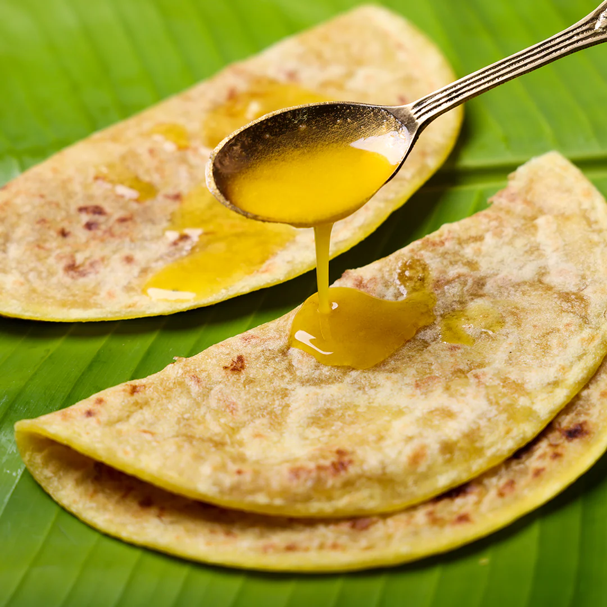

Ingredients
For the Dough:
- Wheat flour (Atta) - 1 cup
- Maida (All-purpose flour) - 1 cup
- Turmeric powder - ¼ tsp
- Salt - a pinch
- Oil/Ghee - 2 tbsp
- Water - as needed
For the Filling (Puran):
- Chana dal (Split Bengal gram) - 1 cup
- Jaggery - 1 cup (adjust sweetness as needed)
- Cardamom powder - ½ tsp
- Nutmeg powder - a pinch (optional)
- Ghee - 1 tbsp
Preparation Steps
- Prepare the Dough:
- Mix wheat flour, maida, turmeric powder, and salt in a bowl.
- Add oil/ghee and mix well until crumbly.
- Gradually add water to form a soft, pliable dough. Cover and let it rest for 30 minutes.
- Cook the Chana Dal:
- Wash and soak chana dal for 30 minutes.
- Pressure cook the dal with water (just enough to cover the dal) for 3-4 whistles or until soft but not mushy.
- Drain excess water and let the dal cool.
- Make the Puran (Filling):
- Mash the cooked dal or blend it in a mixer for a smooth paste.
- In a pan, melt jaggery on low heat. Add the mashed dal and mix well.
- Cook on medium heat, stirring continuously, until the mixture thickens and leaves the sides of the pan.
- Add cardamom and nutmeg powder. Mix well and let it cool.
- Assemble the Puran Poli:
- Divide the dough into equal balls and roll them out into small circles.
- Place a portion of the puran mixture in the center and pleat the edges to seal.
- Roll it out gently into a thin, round shape (6-8 inches).
- Cook the Puran Poli:
- Heat a tawa or flat pan. Cook the rolled puran poli on medium heat.
- Apply ghee and flip, cooking both sides until golden brown spots appear.
- Serve Hot:
- Serve warm with a dollop of ghee, milk, or even amti (spiced dal curry).